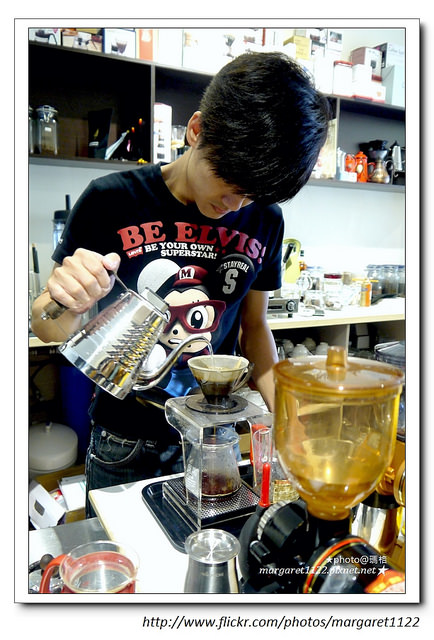
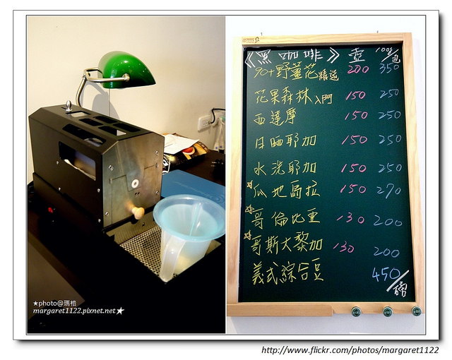

艾迪生咖啡館Edison Coffee


Edison Coffee艾迪生咖啡館沒有很浪漫的店名，Edison就是老闆的名字。確實也沒有很夢幻的裝潢，而我看到了夢想的色彩。店內有許多Edison收藏的英雄公仔，我認得的不多， 但變形金剛裡我最喜歡的大黃蜂就大辣辣矗立在我面前，每個男孩都有超級英雄夢，對Edison來說，應該還有個咖啡夢。 老闆對於咖啡有很多理想, 那次去跟他聊了很多咖啡經, 他也請了我很多的咖啡XDD 原來老闆之前是在新竹工作, 夢想是回到花蓮開一家自己的咖啡店, 老闆對於咖啡有很多自己的看法, 店就在自強夜市附近, 有機會一定要去瞧瞧!!